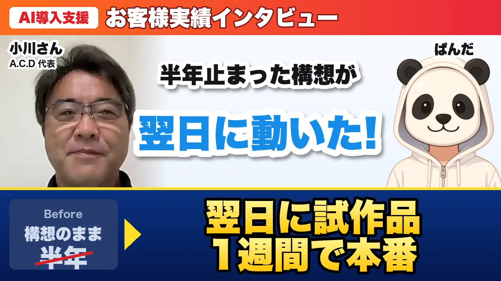

クラウドファンディング専門のLP制作「A.C.D」が、
酒蔵向けの集客の仕組みをAIで形にするまで。
合同会社アウトフィールド 代表 小川 徹さん

対談動画（約41分）は近日公開予定です。
クラウドファンディング専門のLP制作サービス「A.C.D」をやっています。構成・デザイン・コピーライティング・撮影・サイト登録までワンストップで、お客さまの8割は初めてクラファンに挑戦する方です。 お客さまは個人の方から中小メーカーさんまで、良いものを作っているのに、なかなかお客さんに届けられないという方が多いですね。 最近、酒蔵に絞った支援を始めました。日本酒は物語も品質もあるのに、オンラインでの発信や販売に制約が多い。ここに本気で入ろうと決めたのが、今回の相談のきっかけです。
頭の中には前から構想があったんです。広告で酒蔵の経営者さんを集めて、無料のブランド診断を受けてもらい、AIが診断レポートを返して、LINEで少しずつクラファンのことを知ってもらう。本気度の高い方だけ無料相談に来てもらう。 この流れが作れれば、営業の前の工程が全部自動になる。ただ、実際に形にするのは非常に難しくて、構想を始めて半年近く、一歩も進んでいなかった。それが一番のきっかけです。
無料相談やセミナーに、クラファンを知らない状態で来られる方がほとんどで、相談時間のほとんどが「クラファンとは何か」で終わってしまう。準備も実施もこちらのコストが先に出て、成約しなければ全部持ち出しです。体感では相談者の半分くらいがそういう状態でした。 かといって相談を有料にすると、入口で人が来なくなる。相談の前に知ってもらって、本気の方を見極める仕組みが絶対に必要だと分かっていたのに、作れていませんでした。
AIに相談して、ツールを自動でつなぐ「Make」を使えば自分でも作れると言われて、やってみました。Googleフォームで診断を作って、Makeで回答をAIに渡して、レポートを作ってLINEに送る。 でも、つなぐ相手が多くて、どこかを直すと別のところが破綻する。途中で止まってしまい、最後は「これは自分の仕事じゃない」と。Googleフォームだと重いアンケートになるし、自社のページらしい見た目にもならなかった。
最初に相談した日に概要だけお伝えしたら、次の日の夜には、もう動くものが出てきたんです。診断を受けて、AIの結果が出て、LINE登録の案内まで来る試作品です。 開発会社に普通に頼めば、要件の定義で1か月、見積もりで1週間という世界だと思っていたので、「ぱんださんはだいぶ違うな」と。そこで迷いが消えました。
技術に疎いので、納品された後に自分で触れなくなるのでは、というのが一番の不安でした。それは、診断の質問や文言を自分で直せる形に組んでもらえたことで解消しました。 費用面でも、月額の固定費がほとんどかからない形にしてもらえたので、広告費以外のランニングが膨らむ不安もなくなりました。
流れの図と、診断の質問表と、依頼概要までは手元にありました。ただ、自分で考えていたやり方はツールを7つ8つ連携させるもので、どれか1つが止まったら全部止まる。仮に動いても運用できないな、とうすうす感じていました。 一人で夜な夜な調べて、試して、止まって、の繰り返しで、トータル数十時間。それでも診断の答えをAIに渡す手前で止まっていました。 無料相談は1件あたり準備と本番で2時間前後。その半分以上がクラファンの基本説明で、本来の「この商品ならこう売る」という提案にたどり着けていませんでした。
会話のスピードで形になっていく感じでした。相談の次の日の夜に試作品、その数日後には本番で使える状態で、LINEともつながっていた。「本気度の高い人を見分けたい」「質問は自分で直したい」と言ったことも、もう入っていました。最初の相談から2〜3日で、私が半年描いていた流れが一通りできあがっていたという感じです。 私は7つ8つのツールをつなぐ前提で話していたんですが、ぱんださんは「それ、全部ひとつにできますよ」と。月々の固定費はほぼかからず、AIの費用も診断1件数円。「つなぐ」発想から「ひとつの箱に入れる」発想に変わった瞬間に、頭の中のモヤモヤが一気に晴れました。
これが一番よかったですね。仕様書を読んでイメージするのではなく、実際にURLを開いて、自分で診断を受けて、ユーザー目線ですぐにチェックできる。 「酒蔵の人にはこの言葉は通じない」とお願いしたことも、その日のうちに直っていました。打ち合わせで「ページは悩みから入ったほうがいい」と話したら、その日のうちに「こんなお悩みはありませんか？」から始まるページに組み替わっていました。 スピードは想像の10倍くらい。来週打ち合わせしましょうと言ったら、来週にはもう次のバージョンができている。こっちが追いつくのが大変なくらいでした。
大きく3つあります。 1つ目は、診断を受けた人を待たせない設計。AIの分析には少し時間がかかるので、先に点数だけ見せて、詳しいレポートは後からLINEで届く形にしてくれた。私はAIが終わるまで待ってもらうことしか考えていませんでした。 2つ目は、本気度で振り分けてくれること。回答から「今挑戦できる」「準備が整えば」「土台づくりから」を判定して、本気度の高い方だけ相談に誘導できる。冷やかし対策そのものでした。 3つ目は、診断の中身をクラファンの勝ち筋から作り直してくれたこと。私が用意した質問表を、クラファンサイトが公開している統計や酒蔵クラファンの成功事例のリサーチをもとに、行動と数字で答える質問に全部作り直してくれた。診断そのものが、うちのノウハウの一部になっています。
相談する相手と作る人が同じことです。開発会社だと担当や役目が分かれていて、人と人との間で情報が薄まる。それがないから早いし、詰まりもない。 それと、診断の回答は酒蔵さんの大事な情報なので、うちの手元にだけ残る形にしてくれた。そういう気遣いを最初から入れてくれたのは、なかなかないことだと思います。
頭の中の絵が、まさにURL 1本になりました。これまでは「酒蔵向けにこういう支援をやりたいんです」と口で説明していたのが、「この診断を受けてみてください」と言える形になった。入口が言葉からURLに変わったのは、想像以上に大きかったです。 診断の採点、レポート作り、LINEでのメッセージ送付、その後のお知らせ、本気度の振り分け、LINEでの簡単な質問への回答まで、人の手を介さずに回ります。私が動くのは、本気度の高い方から相談の依頼が来たときだけです。 質問や文言ももう何回か自分で直しています。外注さんに修正を頼むと1週間待ちでしたが、それがない。一番ありがたかったところです。
構想が止まっていたのが半年近く。それが、相談して試作品が届くまで翌日、公開できるようになったのが数日後、診断の中身まで作り込んだ本番版がだいたい1週間です。 費用は、当初考えていたやり方だと月々のツール代で数万円はいくと覚悟していましたが、今は月数百円です。
相談した翌日から、会社に営業マンが一人増えた、ですね。しかもただの営業マンじゃなく、企画やプロジェクトの背景まで考えてディレクションしてくれるスーパー営業マン。AIなので24時間、酒蔵さんの話を聞いて、レポートを返し続けてくれます。 AIで何ができるかが分かったのも大きいです。仕組みがひとつ動くと、次が見える。実際、診断の次にYouTuberの選定、SNSの発信と、この1か月くらいで3つをぱんださんにお願いしています。 気持ちの面では、半年止まっていたアイデアが動き出して、ストレスがなくなりました。今は、次にAIで何ができるかを考えるのがすごく楽しいです。
公開されたページを見たときは衝撃でした。診断の質問がクラファンの統計に基づいた質問に生まれ変わって、ページには成功事例と写真まで入っていた。 お願いしたのは「診断を作ってほしい」だったのに、返ってきたのは酒蔵クラファンの勝ち方が組み込まれた診断。背景まで理解して作り込んでもらえたのが、すごくありがたかったです。
動くものを先に出してもらって、ユーザー目線で見ながら決められた進め方です。仕様を決めてから作っていたら、もっと時間がかかっていたと思います。動くものを見て「ここが違う」「これはいい」と言うだけなら、経営者の判断はすぐにできる。この順番を変えてくれたことが全てだと思います。 コンサルの面では、作り込む前に正しい形に直してくれたこと。私は診断の点数を「クラファンに向いているかの点数」にしようとしていましたが、ぱんださんが「点数はブランド力の点数にして、クラファンの準備状況は別に出したほうが酒蔵さんに納得してもらえる」と。実際その通りで、診断を受けた側が「自分のブランドを見てもらえた」と感じる設計になりました。 構築の面では、とにかく早いことと安心感。最初の1週間は毎日改善版が出てきて、「反映しました」というメッセージが夜中に届いていました。
クラファンでは動画をYouTuberさんにお願いすることがあり、自社で選定をしていました。担当者が手作業で100件探して80件に絞り、月50件くらい連絡して、実際に動画を撮ってくれるのは2〜3件というペースでした。 ぱんださんに相談したら数日でツールを作ってもらえて、連絡先付きの候補が400件ほど出てきた。手作業ではメールしか送れていなかったのが、InstagramやXでも連絡できるようになりました。 これは今「CreatorFinder」というサービスになっていて、商品の説明を貼るだけで、20分ほどで数百件の候補が優先順位付きで出てくる。SNSの連絡画面までワンクリックで開いて、文章まで入っています。
まず酒蔵で結果を出して、成功モデルを作りたい。その上で同じ仕組みを使って、飲食店や地域の特産品など、良いものがあるのに認知やブランドづくりができていない業種に横展開したいと考えています。業種を差し替えれば数日で別のバージョンが作れると聞いているので、楽しみです。 SNS（note・X・Instagram）の発信も一緒に設計していて、SNSを見た酒蔵さんが診断に来る入口や、酒蔵さん自身がお客さんとつながる入口を作っています。 目標は、クラファンをやりたいのにたどり着けていない地方の作り手に、酒蔵から始めて広げていくこと。その入口を、人の手ではなく仕組みで開けていくのが、今回の取り組みの延長線上にあります。
やりたい構想が頭の中にある経営者さんなら、全員が対象になると思います。特に、頭の中に流れはあるのに、自分で試して挫折した方。私がMakeで挫折したように、ビジョンがあれば、ぱんださんに話せばすぐに具体的な提案が出てくると思います。 「作ってから考える」に切り替えるのがおすすめです。完璧にしようとしている時間で、ぱんださんなら動くものを3回は作り直せる。私は診断の点数の意味すら、動くものを見て変えました。
頭の中にビジネスのアイデアがあれば、まずは30分くらい、ぱんださんに話してみてください。話す中でアイデアが出てきて、たぶん翌日くらいには、できあがったWebサイトのURLが届きます。それを見ながら話を進めていくのがいいと思います。 自分の構想を練り込む前に、まず一度相談してみるのがいいと思いますね。
クラウドファンディング専門のLP制作サービス。構成設計・デザイン・コピーライティング・撮影・クラファンサイトへの登録サポートまでをワンストップで提供しています。初めてクラファンに挑戦する方を歓迎しています。
本事例は、株式会社TYSSのAI導入支援の実績です。
相談しながらその場で作るので、話した翌日には動くものをお見せできます。
「こんなことはできる？」程度のご相談で構いません。
※社名・お名前はご本人の了承を得て掲載しています。
※掲載内容は収録時点(2026/9)のものです。仕組みがテスト運用の段階でのお話を含みます。
※記載の成果（期間・費用等）は特定のお客様の事例であり、同様の成果を保証するものではありません。